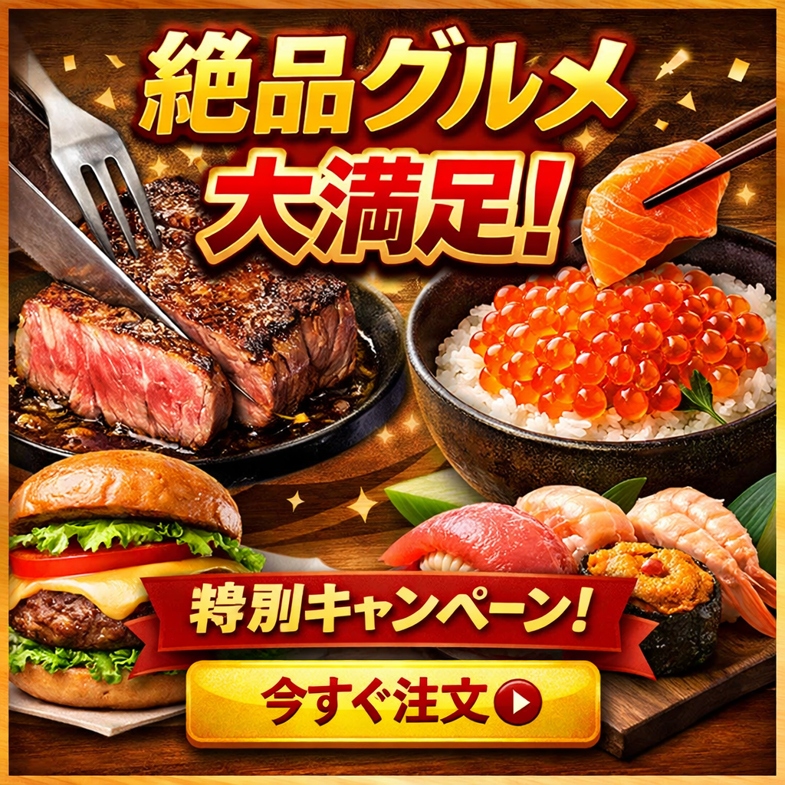

- 自分のプロフィールとか
- お問い合わせとか


旅行は日常から離れ、新しい景色や文化に触れることができる貴重な体験です。普段見慣れた環境を離れることで気分がリフレッシュされ、新たな発見や刺激を得ることができます。観光地を巡るだけでなく、地元の人々と交流したり、その土地ならではの食事を味わったりすることも旅行の醍醐味です。計画を立てる段階からワクワクする気持ちがあり、実際に訪れた場所の思い出は長く心に残ります。最近では気軽に行ける日帰り旅行も人気があり、短い時間でも十分に楽しむことができます。今後もさまざまな場所を訪れ、自分自身の視野を広げていきたいと思っています。
読書は手軽に始められる趣味の一つですが、その魅力は非常に奥深いものがあります。本を読むことで、自分が経験したことのない世界や価値観に触れることができます。特に小説では登場人物の感情や考え方を追体験できるため、想像力が豊かになると感じています。また、ビジネス書や実用書からは新しい知識や考え方を学ぶことができ、日常生活や仕事に活かせる場面も少なくありません。最近では電子書籍も普及し、以前よりも気軽に読書を楽しめるようになりました。忙しい毎日の中でも少しの時間を見つけて本を開くことで、心を落ち着かせる時間を作ることができるでしょう。
このウェブサイトをご覧いただきありがとうございます。本サイトは、学校の演習課題として制作したウェブサイトです。制作を進める中で、個人で運営するウェブサイトを参考にした部分と、企業の公式サイトでよく見られるデザインや構成を参考にした部分があり、全体として少し統一感のない仕上がりになっているかもしれません。本来は個人サイトらしい親しみやすさを目指していましたが、情報を分かりやすく伝えたいと考えるうちに、企業サイトのような表現やページ構成も取り入れることになりました。そのため、一部のページでは個人サイトらしさと企業サイトらしさが混ざった印象を受ける場合があります。演習の一環として試行錯誤しながら制作したため、見づらい点や分かりにくい部分がありましたら申し訳ありません。今回の制作を通して、ウェブサイトの目的に合わせてデザインや文章表現を統一することの大切さを学ぶことができました。まだ改善できる点は多くありますが、学習の成果として温かくご覧いただければ幸いです。今後もより見やすく分かりやすいウェブサイト作りを目指していきたいと思います。

東京工科大学在学
メディア学部2年生


